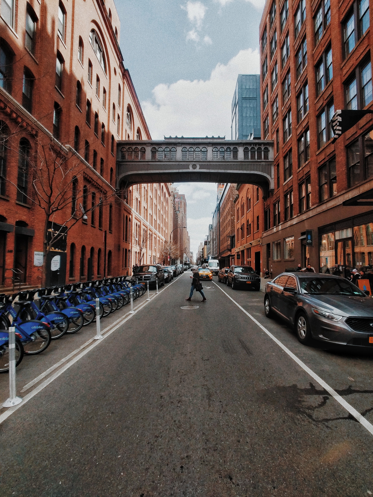

Chelsea Football Club are an English professional football club based in Fulham, London. Founded in 1905, they compete in the Premier League, the top division of English football. Chelsea are among England's most successful clubs; they have been league champions six times and won over thirty competitive honours, including six European trophies. Their home ground is Stamford Bridge.[4]
